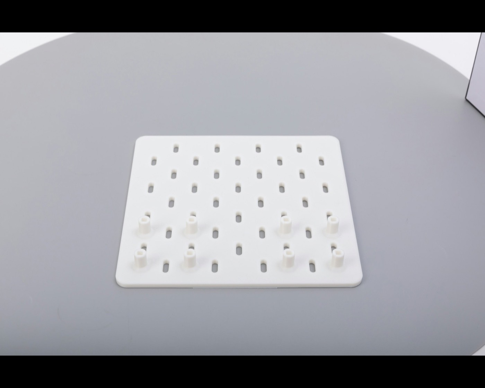

Career Exploration and Development
Open Oberlin’s career center page for advising, internship-search support, and application help.
Open CED ↗Organizing for 2026–27. Membership interest is open.
Submit membership interestThe listings below are unpaid roles in the student society. Internship and research source pages appear farther down.

Each listing describes the work and links to the membership form.
Preparing the role list.
These pages cover career services, campus research, and NSF-funded undergraduate research programs.
Open Oberlin’s career center page for advising, internship-search support, and application help.
Open CED ↗Open Oberlin’s undergraduate research page for campus programs, funding, and contact information.
Open research page ↗Search the NSF directory of REU sites, then apply through each host program.
Search NSF REU sites ↗